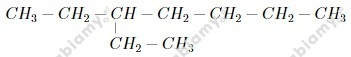
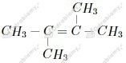
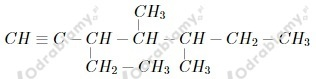
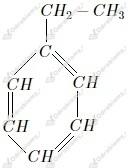

Zdania prawdziwe to:
a) Alotropia to zjawisko występowania pierwiastka chemicznego w kilku odmianach różniących się budową.
d) Węglami kopalnymi są torf, węgiel kamienny i węgiel brunatny.
wyjaśnienie do zdań nieprawdziwych:
ad.b) odmiany alotropowe danego pierwiastka różnią się właściwościami
ad.c) spośród podanych jedynie diament jest odmianą alotropową węgla
a)
(łańcuch główny składa się z 3 atomów węgla) 2,2-dimetylopropan
b)
(łańcuch główny składa się z 5 atomów węgla) 3-metylopentan
c)
(łańcuch główny składa się z 6 atomów węgla) 2-metyloheks-3-en
d)
(łańcuch główny składa się z 4 atomów węgla) 3-metylobut-1-yn
a)

b)

c)

d)

Masa węgla w antracycie:
Masa węgla w torfie:
Odpowiedź: Więcej czystego węgla zawiera próbka torfu o masie 160 kg.
Liczymy stosunki mas produktów w poszczególnych równaniach:
a)
b)
c)
Stosunek mas produktów wynosi 7:9 w równaniu b .
Nazwy produktów: CO - tlenek węgla(II) , H2O - woda
Rodzaj spalania: spalanie niecałkowite
Zaczynamy od obliczenia objętości pomieszczenia:
Liczymy 5% z tej objętości, czyli objętość metanu stanowiącą niebezpieczeństwo:
Liczymy masę tej ilości metanu:
Odpowiedź: W podanym pomieszczeniu niebezpieczeństwo stanowić będzie 4,5 m3 metanu o łącznej masie 2,957 kg.
W skład benzyny wchodzą alkany o łańcuchach węglowych długości 5-12 atomów, zatem ich wzory sumaryczne to:
Przygotowujemy probówki z wodą wapienną (Ca(OH)2 (aq)) oraz z wodą bromową (Br2 (aq)).
Obserwacje:
- probówka 1 : Następuje zmętnienie wody wapiennej.
- probówka 2: Brak widocznych objawów reakcji.
- probówka 3: Woda bromowa ulega odbarwieniu.
Wnioski:
Gazem wprowadzonym do probówki 1 był CO2, do probówki 2 - C2H6, zaś do probówki 3 - C2H2.
Równania reakcji:
1.
2.
3.